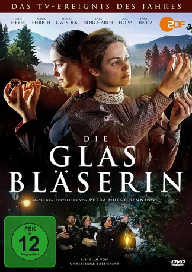

#5150 Die Glasbläserin
 
 IMDB-Wertung: 7.0 / 10
IMDB-Wertung: 7.0 / 10  Metascore: 0
Metascore: 0 
Thüringen, 1890: Nach dem Tod ihrer Eltern stehen die jungen Schwestern Marie und Johanna vor dem Nichts. Marie möchte die Glasbläserei des Vaters weiterführen, doch die Zunftordnung verbietet dies. Die Schwestern nehmen Arbeit in anderen Handwerksbetrieben an, doch bald schon wird deutlich, dass die beiden Frauen sich in der patriarchalischen Gesellschaft ihren eigenen Weg erkämpfen müssen.
Jahr: 2016
Dauer: 88 Minuten
FSK: 12
Land: Deutschland Studio: Koch MediaTonspuren:
Untertitel:
Auflösung: 1080p (1920x1080) Größe: 4352 MB
Genre: Drama, Geschichte, Weihnachten
Regisseur: Christiane Balthasar
Drehbuch: Carl Ellsworth
Soundtrack:
Darsteller:
 Franz Dinda als Thomas Heimer
Franz Dinda als Thomas Heimer- Dirk Borchardt als Friedhelm Strobel
- Karel Hermánek Jr. als Max
- Luise Heyer als Johanna Steinmann
- Maria Ehrich als Marie Steinmann
- Robert Gwisdek als Peter Maienbaum
- Max Hopp als Wilhelm Heimer
- Ute Willing als Witwe Grün
- Johanna Bittenbinder als Marianne Bohn
- Marc Barthel als Steven Miles
- Jakub Chromecek als Sebastian Heimer
- Adam Richard Grimm als Juri
- Petr Halícek als
- Josef Guruncz als
Datei: X:\2016(G-M)\Glasbläserin, Die (2016, FSK12, 1920x1080).mkv seit 27.12.2016
Festplatte: HD 2016(A-Z)
 Es gibt insgesamt 164 Filme in der Gruppe '2016(G-M)'
Es gibt insgesamt 164 Filme in der Gruppe '2016(G-M)'